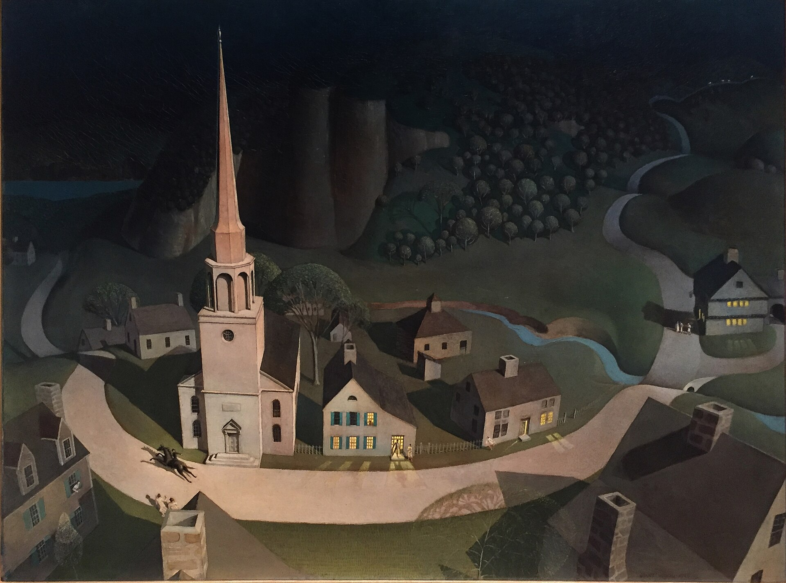
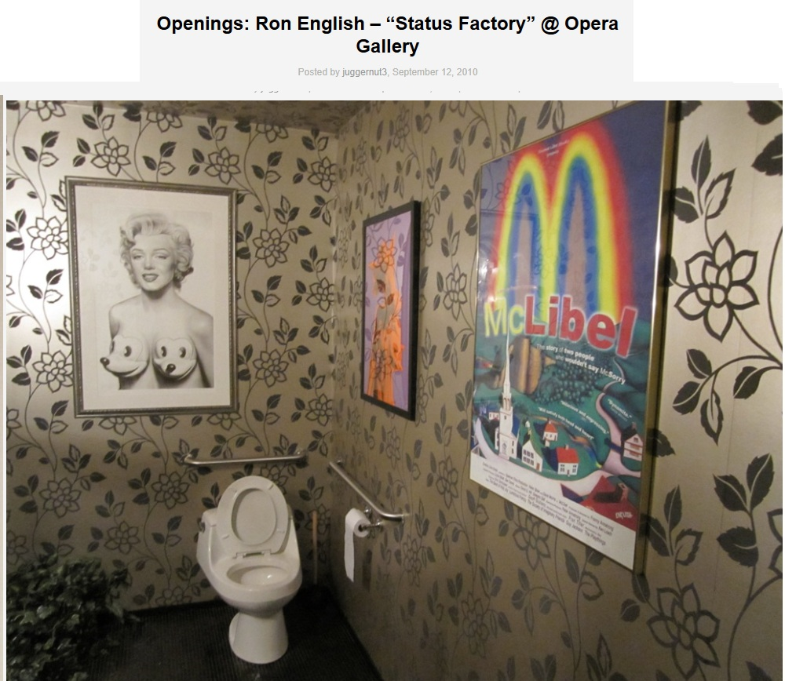
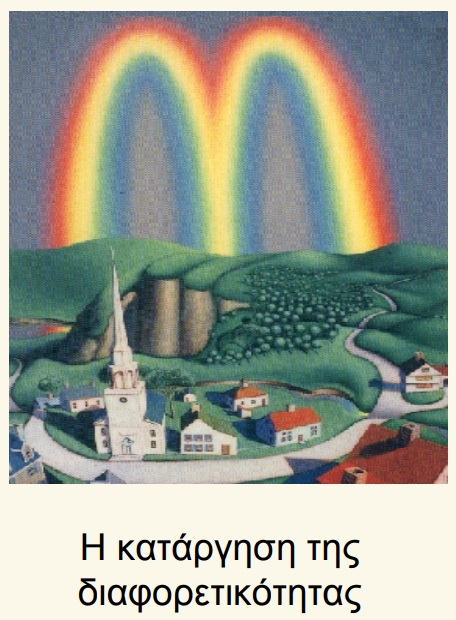

Exhibitions
Three Artists, Three Visions, MOCA (Museum of Contemporary Art), Washington, D.C., US, December 6, 1996–January 4, 1997.
Literature
Ron English, Popaganda: The Art & Subversion of Ron English (San Francisco: Last Gasp, 2001), p. 97. ISBN 1-887128-60-3.
Ron English, Abject Expressionism: The Art of Ron English (San Francisco: Last Gasp, 2007), p. 29. ISBN 978-0867196894.
Ron English, Original Grin: The Art of Ron English (Paris: Cernunnos, 2019), p. 83. ISBN 978-2374950938.
Notes
This work references Grant Wood’s The Midnight Ride of Paul Revere.
The image was used for a poster associated with the documentary film McLibel.
Ancillary Documentation
The following materials document the Grant Wood source reference, film-poster use, and selected image-bearing online documentation associated with the work.



Selected Online Circulation
Selected examples of the work’s online circulation, reproduction, or discussion. This list is not exhaustive; it is intended to document representative appearances of the image beyond formal exhibition and publication records.